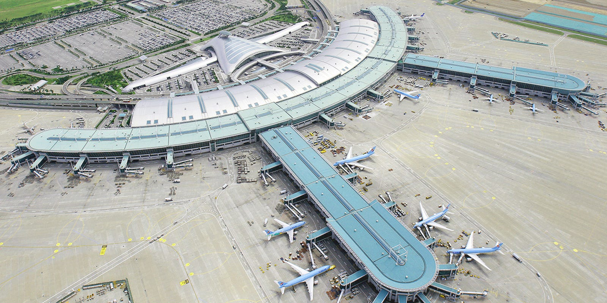

Rethinking Airport architecture
a call to all airports owners and operators


know it is sure that how airports should be designed must be rethought by clearly identifying and separating these three types of flow, arrivals, departures, and transits. Symmetry is a tool that the architect could leverage to build a better airport because it doesn't make sense to direct and group people that are going and people that are arriving in the same building and the same area. Terminals of departure and terminals of arrivals should be in a completely opposite site and connections made for each of these terminals to communicate with the transits terminal which also in its isolated space.
Just started to think to play a management game about airports called airport CEO and decided to try to build such airports and you can agree with me that this pandemic era I think and pray that is over for every one of us highlighted us that ze should build our airport with such kind of events in mind.
So you architects have a challenge of building virus-safe buildings, I mean isolable buildings and these building can also be flexible like the kind of buildings I name migrable buildings.
Launching a call to all airports management teams to rethink how airports are designed and operated and to tell to people that they acknowledged this episode of coronavirus and have and are trying to improve airports by making them even able to be operational when a pandemic emerge from somewhere. Airports links could be switched off and travelers' flows clearly separated.
So if you are an architect you have here an opportunity to ship creative, safe airports if you claim about it as I did in this article.
If you have a friend who is an architect please share this thought with her or him.
Thank you